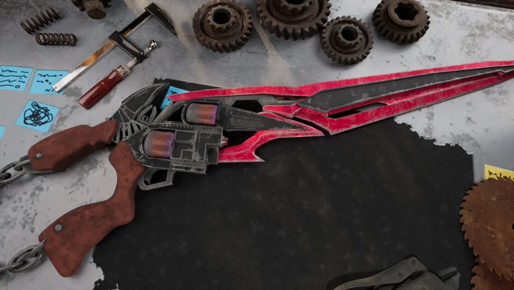

Project
Final Fantasy Gunblade
A hard-surface hero asset built around strong silhouette language, metallic weathering, and cinematic presentation.
Overview
This project focused on creating a weapon that feels premium, iconic, and grounded in a believable material story. The form language combines sci-fi sensibility with tactile, worn metal surfaces and a dramatic red-and-black finish.
Production
The build process involved sculpting, detailing, texturing, and look-development to achieve a visually compelling final render. The cool, dangerous aesthetic was designed to register strongly in close-up hero shots and presentation renders.
Return to Projects